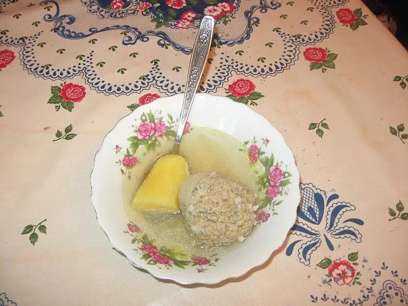

Фото: Interfase, CC BY-SA 4.0

Кюфта-бозбаш
Азербайджанский суп с большими фрикадельками из баранины, нутом и картофелем
130 мин6 порц.366 ккал на порциюБ 21 · Ж 18 · У 31Кавказская кухня
Продукты на 6 порц.
- Баранина600 г
- Нут0,5 стак.
- Вода2,5 л
- Лук репчатый2 шт
- Рис3 ст. л.
- Картофель3 шт
- Чернослив по желанию6 шт
- Куркума0,5 ч. л.
- Соль2 ч. л.
- Перец чёрный молотый0,5 ч. л.
- Кинза0,5 пучка
Как готовить
- Замочите нут в холодной воде на ночь. Слейте воду, залейте нут 2,5 л свежей воды и варите на слабом огне 1 час.
- Рис отварите 5 минут и откиньте. Баранину дважды прокрутите через мясорубку с одной луковицей.
- Смешайте фарш с рисом, солью и перцем, хорошо отбейте о миску. Сформуйте 6 крупных шаров, в каждый вложите черносливину.
- Опустите кюфту в кипящий бульон с нутом, добавьте второй лук, нарезанный кольцами. Варите на слабом огне 20 минут, кипение должно быть еле заметным.
- Добавьте картофель крупными кусками, куркуму и соль, варите ещё 20 минут, пока картофель не станет мягким.
- Посыпьте рубленой кинзой и дайте постоять 10 минут. Подавайте по одной кюфте в тарелку.
Совет. Чтобы кюфта не развалилась, фарш надо отбить: 15-20 раз бросить с силой о миску. В оригинале внутрь кладут сушёную алычу, а в бульон шафран и сушёную мяту, чернослив и куркума их заменяют.